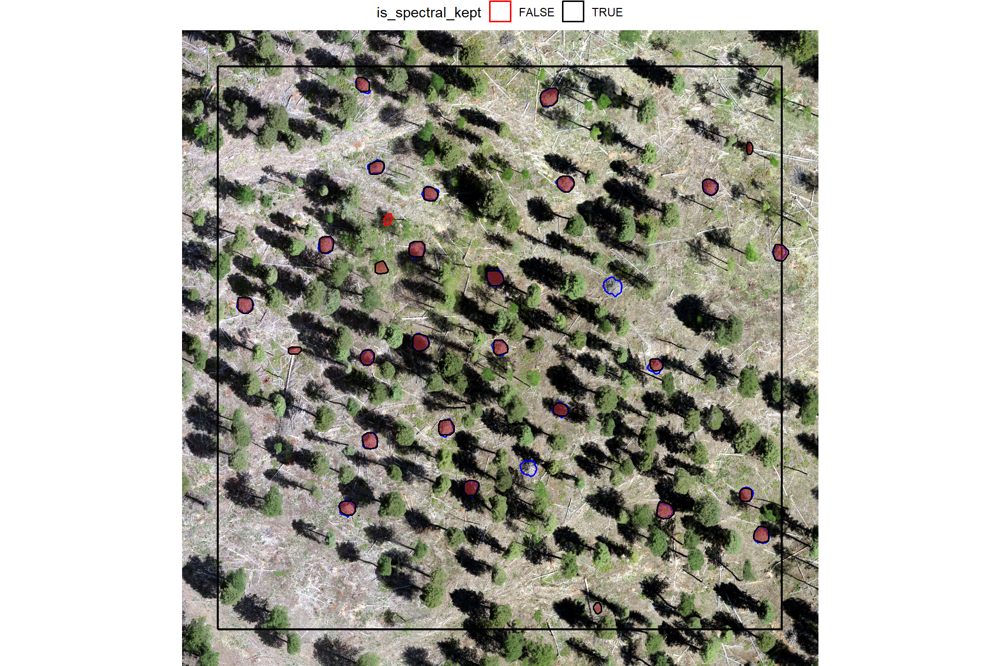
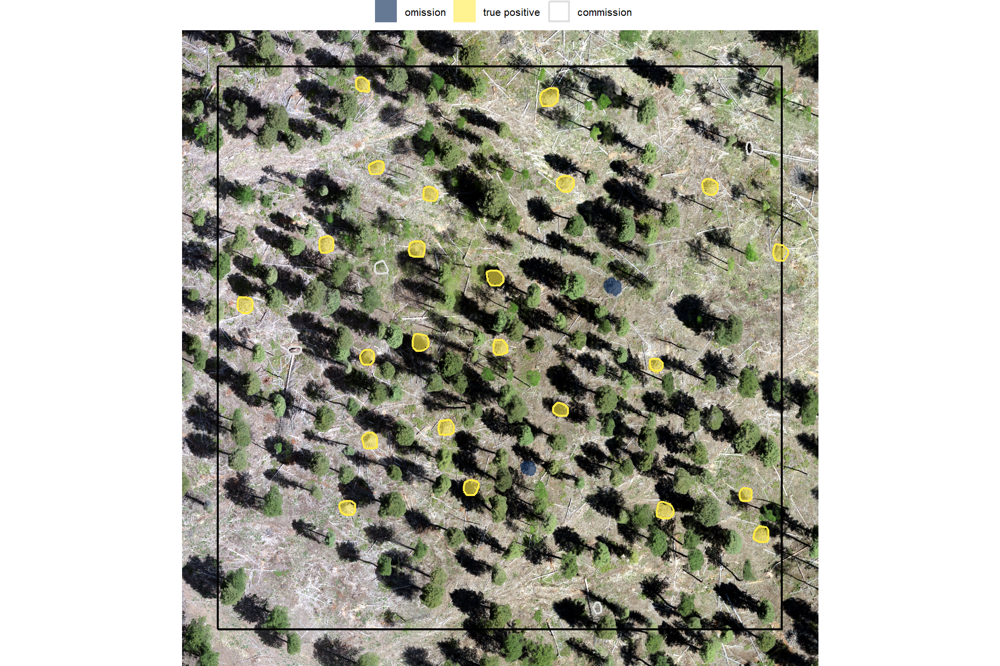
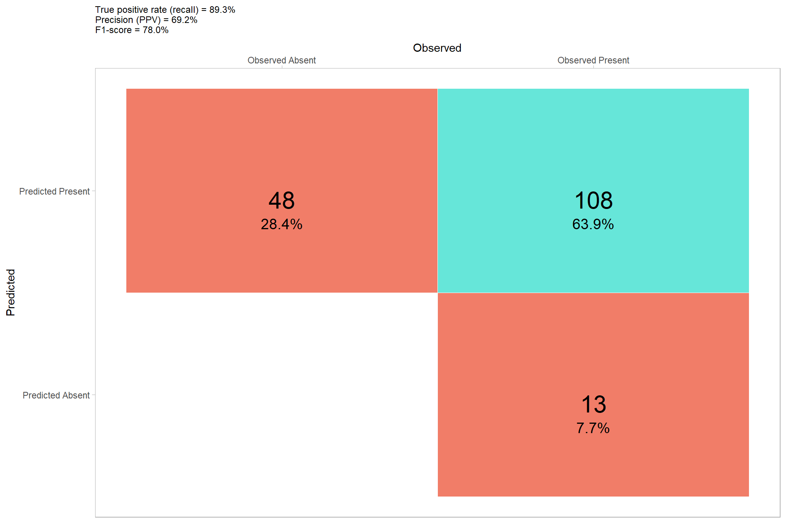
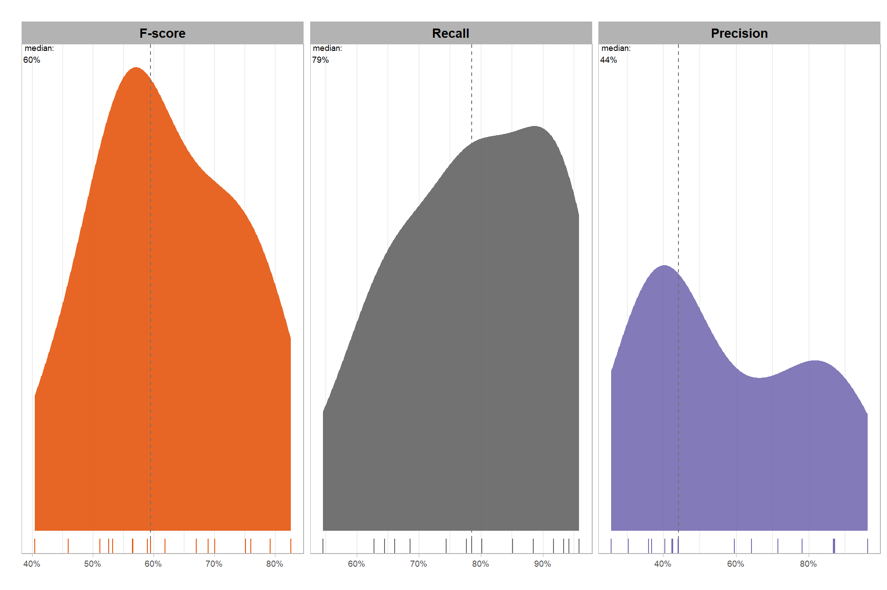
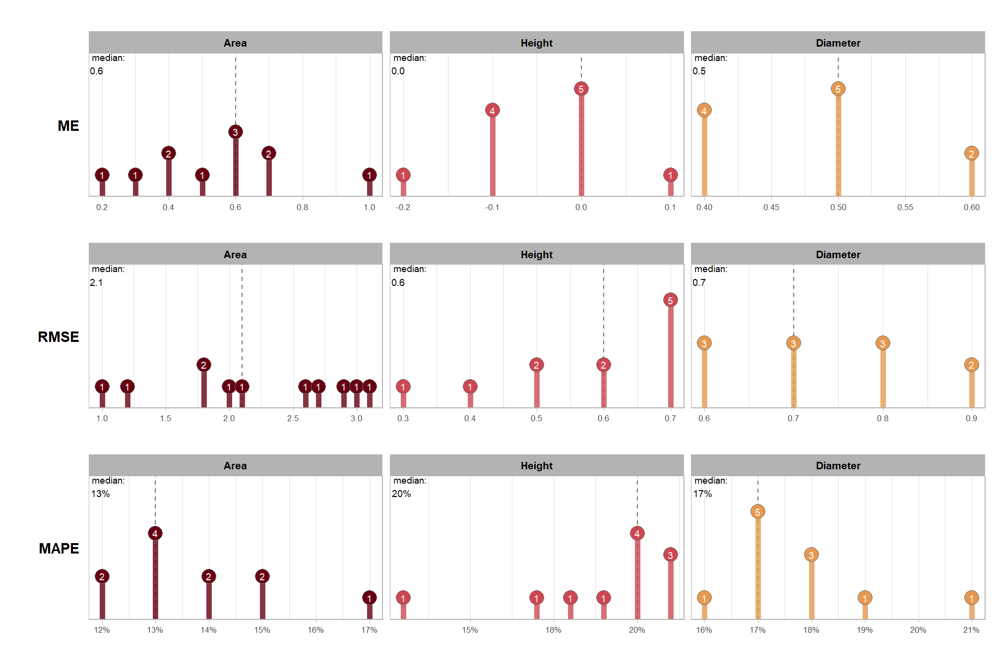
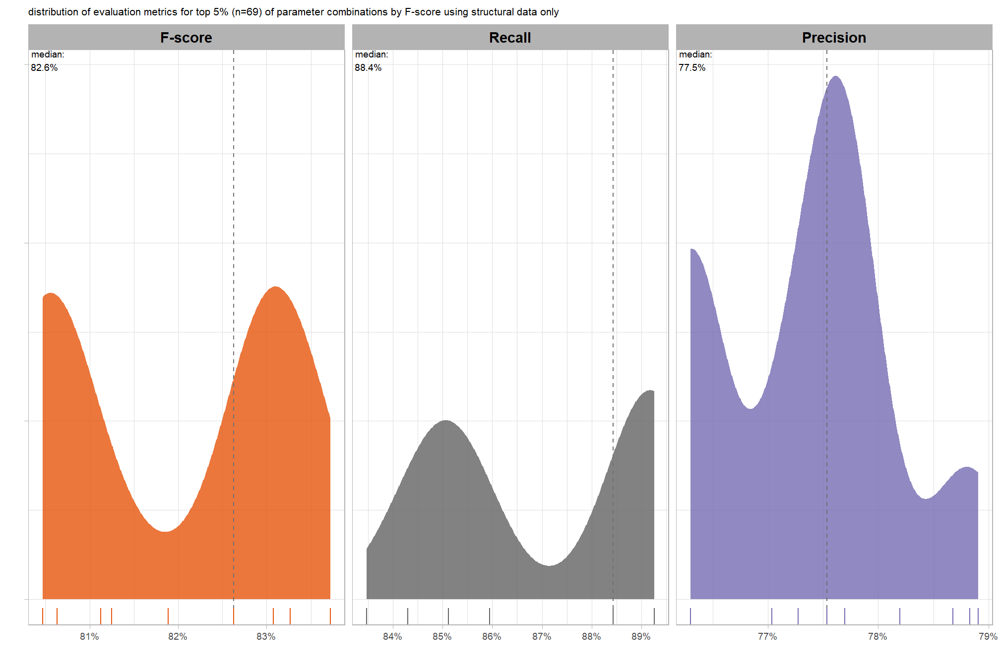

Section 5 Point Cloud Classification
We’ll use the point cloud data alone (to begin with) to attempt to classify slash piles without additional spectral information.
We’ll use the cloud2trees package to perform all preprocessing of point cloud data which includes:
- ground classification and noise removal
- raster data (DTM and CHM) generation
- point cloud height normalization
All of this can be accomplished using the cloud2raster() function. After generating these products from the raw point cloud we’ll perform object segmentation to attempt to detect round, conical objects like slash piles from: 1) the normalized point cloud directly; 2) the CHM which we’ll generate by setting the minimum height to zero to effectively create a digital surface model (DSM).
To attempt to detect slash piles directly from the point cloud we can use a clustering algorithm such as DBSCAN (Density-Based Spatial Clustering of Applications with Noise) which identifies clusters based on point density, making it effective for detecting clusters of arbitrary shapes and sizes. It does not require the number of clusters to be specified beforehand. Insert something from TLS paper that used DBSCAN in semi-automated way….xxxxx. After segmenting the point cloud using DBSCAN, random forest can be used as a classifier (i.e. classification step) to distinguish slash piles from other objects based on their extracted geometric features. The general workflow is:
- for each point in the normalized non-ground point cloud, compute a suite of relevant geometric features within a defined local neighborhood radius using
lidR::point_metrics() - calculate features derived from PCA, such as linearity, planarity, sphericity, and surface variation. Also, compute curvature (mean, Gaussian) and roughness
- perform object segmentation/clustering to group points belonging to individual objects using DBSCAN which can identify dense clusters without requiring a predefined number of objects
- classify the segmented objects (clusters) as “slash pile” or “non-slash pile” based on their extracted features (e.g., sphericity, roughness, height, volume) with a random forest classifier using a manually annotated subset of segmented objects
- merge small, adjacent segments that likely belong to a single slash pile based on proximity and connectivity
- perform a confusion matrix-based evaluation on the results
To attempt to identify slash piles from the CHM/DSM, we can use watershed segmentation (potentially without “seed” points) in a bottom-up approach. Insert something from paper about bottom-up approach that uses a CHM “slice” near the ground…xxxxx. For slash piles, which are often irregular and may not have a distinct “treetop” equivalent, CHM-based methods might be less directly applicable unless the piles present a very clear, isolated conical or rounded form. Could use expected morphology of the slash piles (e.g. maximum height) based on prior research.
5.1 Process Raw Point Cloud
We’ll use cloud2trees::cloud2raster() to process the raw point cloud data
{r, include=FALSE,eval=FALSE}E
if(!dir.exists("../data/point_cloud_processing_delivery")){
cloud2raster_ans <- cloud2trees::cloud2raster(
output_dir = "../data"
, input_las_dir = "E:\\PFDP_Data\\p4pro_images\\P4Pro_06_17_2021_half_half_optimal\\2_densification\\point_cloud"
, accuracy_level = 2
, keep_intrmdt = T
, dtm_res_m = 0.25
, chm_res_m = 0.1
, min_height = 0 # effectively generates a DSM based on non-ground points
)
}else{
dtm_temp <- terra::rast("../data/point_cloud_processing_delivery/dtm_0.25m.tif")
chm_temp <- terra::rast("../data/point_cloud_processing_delivery/chm_0.1m.tif")
cloud2raster_ans <- list(
"dtm_rast" = dtm_temp
, "chm_rast" = chm_temp
)
}let’s check out the DTM
cloud2raster_ans$dtm_rast %>%
terra::aggregate(fact = 2) %>% #, fun = "median", cores = lasR::half_cores(), na.rm = T) %>%
terra::plot(axes = F)## |---------|---------|---------|---------|========================================= 
and CHM
cloud2raster_ans$chm_rast %>%
terra::aggregate(fact = 2) %>% #, fun = "median", cores = lasR::half_cores(), na.rm = T) %>%
terra::plot(col = viridis::plasma(100), axes = F)## |---------|---------|---------|---------|========================================= 
5.1.1 DTM and CHM + piles
let’s visually inspect the DTM and CHM with the pile outlines overlaid
p_fn_temp <- function(
rn
, df = slash_piles_polys
, rast = cloud2raster_ans$dtm_rast
, crs = terra::crs(cloud2raster_ans$dtm_rast)
, my_title = ""
, vopt = "viridis"
, lim = NULL
) {
# scale the buffer based on the largest
d_temp <- df %>%
dplyr::arrange(tolower(comment), desc(diameter)) %>%
dplyr::slice(rn) %>%
sf::st_transform(crs)
# plt classifier
# convert to stars
comp_st <- rast %>%
terra::crop(
d_temp %>% sf::st_buffer(20) %>% terra::vect()
) %>%
terra::as.data.frame(xy = T) %>%
dplyr::rename(f=3)
# ggplot
comp_temp <- ggplot2::ggplot() +
ggplot2::geom_tile(data = comp_st, ggplot2::aes(x=x,y=y,fill=f)) +
ggplot2::geom_sf(data = d_temp, fill = NA, color = "gray33", lwd = 0.4) +
ggplot2::scale_x_continuous(expand = c(0, 0)) +
ggplot2::scale_y_continuous(expand = c(0, 0)) +
ggplot2::labs(
x = ""
, y = ""
, subtitle = my_title
) +
ggplot2::theme_void() +
ggplot2::theme(
legend.position = "none" # c(0.5,1)
, legend.margin = margin(0,0,0,0)
, legend.text = element_text(size = 8)
, legend.title = element_text(size = 8)
, legend.key = element_rect(fill = "white")
# , plot.title = ggtext::element_markdown(size = 10, hjust = 0.5)
, plot.title = element_text(size = 8, hjust = 0.5, face = "bold")
, plot.subtitle = element_text(size = 6, hjust = 0.5, face = "italic")
)
if(!is.null(lim)){
comp_temp <- comp_temp +
ggplot2::scale_fill_viridis_c(option = vopt, limits = lim)
}else{
comp_temp <- comp_temp +
ggplot2::scale_fill_viridis_c(option = vopt)
}
plt_temp <- comp_temp
return(list("plt"=plt_temp,"d"=d_temp))
}
# p_fn_temp(
# rn = 5
# # , lim = c(floor(terra::minmax(cloud2raster_ans$dtm_rast)[1]*0.98), floor(terra::minmax(cloud2raster_ans$dtm_rast)[2]*1.02))
# )
# p_fn_temp(
# rn = 11
# , rast = cloud2raster_ans$chm_rast
# , vopt = "plasma"
# )
# combine 3
plt_combine_temp <- function(
rn
, df = slash_piles_polys %>% dplyr::filter(!is.na(comment))
, rast1 = cloud2raster_ans$dtm_rast
, title1 = "DTM"
, vopt1 = "viridis"
, rast2 = cloud2raster_ans$chm_rast
, title2 = "CHM"
, vopt2 = "plasma"
, crs = terra::crs(cloud2raster_ans$dtm_rast)
) {
# composite 1
ans1 <- p_fn_temp(
rn = rn
, df = df
, rast = rast1
, my_title = title1
, crs = crs
, vopt = vopt1
)
# composite 2
ans2 <- p_fn_temp(
rn = rn
, df = df
, rast = rast2
, my_title = title2
, crs = crs
, vopt = vopt2
)
# plt rgb
rgb_temp <-
ortho_plt_fn(ans1$d) +
ggplot2::geom_sf(data = ans1$d, fill = NA, color = "white", lwd = 0.3)
# combine
r <- ans1$plt + ans2$plt + rgb_temp
return(r)
}
# plt_combine_temp(2)
# add pile locations
plt_list_rast_comp <- sample(1:nrow(slash_piles_polys %>% dplyr::filter(!is.na(comment))),10) %>%
purrr::map(plt_combine_temp)
# plt_list_rast_comp[[2]]combine the plots for a few piles

a few things are noteworthy in these examples:
- Piles are clearly visible in some areas of the DTM but less visible in other areas
- Piles are delineated in the DSM but with varying degrees of definition based on surrounding terrain and pile structure
- The DTM and DSM were rarely impacted by shadows in the RGB imagery
- It is interesting to see coarse woody debris occasionally visible in the DSM
5.2 Raster-based approaches
We’ll first attempt to detect slash piles using raster-based methods with the DTM and DSM. These raster-based approaches are simple and efficient but can be limited in complex forest structures where piles might be occluded by overstory trees and rasterization simplifies/removes some of the rich 3D information in the point cloud. For slash piles, which are often irregular and may not have a distinct “treetop” equivalent, common CHM-based tree detection methods might be less directly applicable. We’ll see…
5.2.1 Watershed Segmentation
When used for individual tree detection (ITD), this technique treats the CHM as a topographic surface, where local maxima represent tree tops and valleys represent crown boundaries. A “water source” is conceptually placed at each local lowest point, and the surface is “flooded.” Barriers are generated where different “water sources” meet, forming watershed lines that delineate individual tree crowns.
two possible approaches for segmenting piles are to: 1) segment individual trees using a top-down approach and then use the canopy cover as a mask to then identify slash piles; 2) use a bottoms-up approach to perform slash pile segmentation on a lower “slice” of the CHM based on an expected maximum height of a pile
we’ll first try the bottoms-up approach using a CHM slice with a maximum height of 4 m based on the highest point in the point cloud (3.65 m) of the slash pile which had the tallest measurement in the field (6.4 m). The 6.4 m (21 ft) field measured height seems unlikely even for a machine pile, so we’ll use the point cloud measured height which will align with the CHM data.
check out the lower slice of the CHM
# set the max expected pile height
max_ht_m <- 4
# lower CHM slice
cloud2raster_ans$chm_rast %>%
terra::clamp(upper = max_ht_m, lower = 0, values = F) %>%
terra::plot(col = viridis::plasma(100), axes = F)
already, it looks like the piles should be distinguishable objects from this data
let’s run watershed segmentation using lidR::watershed() which is based on the bioconductor package EBIimage
watershed_ans <- lidR::watershed(
chm = cloud2raster_ans$chm_rast %>%
terra::clamp(upper = max_ht_m, lower = 0, values = F)
, th_tree = 0.5
)()
# this is a raster
watershed_ans## class : SpatRaster
## size : 5479, 6946, 1 (nrow, ncol, nlyr)
## resolution : 0.1, 0.1 (x, y)
## extent : 499264.2, 499958.8, 4317599, 4318147 (xmin, xmax, ymin, ymax)
## coord. ref. : WGS 84 / UTM zone 13N (EPSG:32613)
## source(s) : memory
## varname : chm_0.1m
## name : focal_mean
## min value : 1
## max value : 17305each value should be a unique “segment” which we can refine based on rules of expected size and shape of piles
## layer value count
## 1 1 2599 1
## 2 1 5549 36
## 3 1 8309 18
## 4 1 3635 1
## 5 1 4044 6
## 6 1 11231 15
## 7 1 2560 14
## 8 1 2464 118
## 9 1 8672 5
## 10 1 7055 116where the “value” is the segment identifier and the count is the number of raster cells assigned to that segment
let’s plot the raster return from the watershed segmentation
watershed_ans %>%
terra::plot(
col = c(
viridis::turbo(n = floor(terra::minmax(watershed_ans)[2]/3))
, viridis::viridis(n = floor(terra::minmax(watershed_ans)[2]/3))
, viridis::cividis(n = floor(terra::minmax(watershed_ans)[2]/3))
) %>% sample()
, legend = F
, axes = F
)we can quickly calculate the area of the segments which we could use as a filter
min_area_m2 <- 2
# Two standard US parking spaces, typically measuring 9 feet by 18 feet,
# are roughly equivalent to 30.25 square meters. Each space is approximately 15.125 square meters.
# 15.125*3
max_area_m2 <- 50
# list of segments that meet size threshold
keep_segs_temp <- watershed_ans %>%
terra::freq() %>%
dplyr::mutate(area_m2 = count * (terra::res(watershed_ans) %>% .[1:2] %>% prod()) ) %>%
dplyr::filter(
area_m2 >= min_area_m2 &
area_m2 <= max_area_m2
) %>%
dplyr::pull(value)
# filter the raster and plot it
watershed_ans <- watershed_ans %>%
terra::subst(from = keep_segs_temp, to = keep_segs_temp, others = NA)plot it with the watershed segmented piles (orange) and the actual piles (white)
# plot it
terra::plotRGB(ortho_rast, stretch = "lin", colNA = "transparent")
terra::plot(
watershed_ans %>%
terra::as.polygons(round = F, aggregate = T, values = T, extent = F, na.rm = T)
, add = T, border = "orangered", col = NA, lwd = 1.2
)
terra::plot(
slash_piles_polys %>%
sf::st_transform(terra::crs(ortho_rast)) %>% terra::vect()
, add = T, border = "white", col = NA, lwd = 1
)
zomg…we are getting so close.
5.2.1.1 Geometric filtering of watershed segments
now let’s try to filter based on the geometric properties of the watershed-detected segments.
ideally, we want objects that: i) meet the height threshold over the entire surface of the segment (no doughnuts); ii) are not irregularly shaped (relatively few inward angles); and iii) are circular in shape
we’ll make a convex hull of the polygons generated from a raster to smooth out the square edges and any inward curves or indentations, resulting in a boundary that’s always convex (no inward angles). using a convex hull we will be able to filter out:
- watershed detected segments that were actually lower branches of a tree. these will be shaped like a doughnut with circular shape but a hole in the center
- watershed detected segments that are irregularly shaped like coarse woody debris that was not organized into piles by humans
we will then use circle fitting further filter irregular and linear shapes. Least squares circle fitting is a method to find the circle that best approximates a set of data points by minimizing the sum of the squared distances between the points and the circle wh
let’s convert the watershed-detected segments from raster to vector data and create a convex hull of the shapes for comparison
# vectors of segments
watershed_ans_poly <-
watershed_ans %>%
terra::as.polygons(round = F, aggregate = T, values = T, extent = F, na.rm = T) %>%
setNames("pred_id") %>%
sf::st_as_sf() %>%
sf::st_simplify() %>%
sf::st_make_valid() %>%
dplyr::filter(sf::st_is_valid(.))
# convex hulls of segments
watershed_ans_poly_chull <-
watershed_ans_poly %>%
sf::st_convex_hull() %>%
sf::st_simplify() %>%
sf::st_make_valid() %>%
dplyr::filter(sf::st_is_valid(.))lets make an example area that we’ll use to demonstrate the filtering process of the watershed detected segments
aoi_temp <- watershed_ans_poly %>%
# dplyr::filter(pred_id==241) %>%
dplyr::filter(pred_id==11916) %>%
# dplyr::slice_sample(n = 1) %>%
sf::st_bbox() %>%
sf::st_as_sfc() %>%
sf::st_buffer(55)
# list of examples
pred_id_temp <- watershed_ans_poly %>%
sf::st_intersection(aoi_temp) %>%
dplyr::pull(pred_id)
# plot it
ortho_plt_temp <-
ortho_plt_fn(
stand = aoi_temp
, buffer = 5
) plot our example watershed detected segments as vectors (pink) and convex hull of the segments (orange) compared with the ground truth piles (blue)
ortho_plt_temp +
ggplot2::geom_sf(
data = watershed_ans_poly %>%
dplyr::filter(pred_id %in% pred_id_temp) %>%
dplyr::mutate(pred_id = as.factor(pred_id))
, fill = "hotpink"
, alpha = 0.6
, lwd = 0
, color = NA
) +
ggplot2::geom_sf(
data = watershed_ans_poly_chull %>%
dplyr::filter(pred_id %in% pred_id_temp)
, color = "orangered"
, fill = NA
) +
ggplot2::geom_sf(
data = slash_piles_polys %>%
sf::st_transform(sf::st_crs(watershed_ans_poly)) %>%
sf::st_intersection(aoi_temp)
, fill = NA, color = "blue", lwd = 0.3
) +
ggplot2::theme_void() +
ggplot2::theme(legend.position = "none")
let’s first filter out segments that have holes in them or are very irregularly shaped by comparing the area of the polygon and convex hull
# min required overlap between the predicted pile and the convex hull of the predicted pile
pct_chull_overlap <- 0.7
# compare areas
watershed_keep_overlaps_chull_pred_id <- watershed_ans_poly %>%
dplyr::mutate(poly_area_m2 = sf::st_area(.) %>% as.numeric()) %>%
dplyr::inner_join(
watershed_ans_poly_chull %>%
dplyr::mutate(chull_area_m2 = sf::st_area(.) %>% as.numeric()) %>%
sf::st_drop_geometry()
, by = "pred_id"
) %>%
dplyr::mutate(
pct_chull = poly_area_m2/chull_area_m2
) %>%
dplyr::filter(
pct_chull >= pct_chull_overlap
) %>%
dplyr::pull(pred_id)which piles meet the minimum overlap threshold (black outline) between the segmented polygon and the convex hull?
ortho_plt_temp +
# ggplot2::ggplot() +
ggplot2::geom_sf(
data = watershed_ans_poly %>%
dplyr::filter(pred_id %in% pred_id_temp) %>%
dplyr::mutate(pred_id = as.factor(pred_id))
, fill = "hotpink"
, alpha = 0.6
, lwd = 0
, color = NA
) +
ggplot2::geom_sf(
data = watershed_ans_poly_chull %>%
dplyr::filter(pred_id %in% pred_id_temp) %>%
dplyr::mutate(
meets_overlap = pred_id %in% watershed_keep_overlaps_chull_pred_id
)
, ggplot2::aes(color = meets_overlap)
, fill = NA
) +
ggplot2::geom_sf(
data = slash_piles_polys %>%
sf::st_transform(sf::st_crs(watershed_ans_poly)) %>%
sf::st_intersection(aoi_temp)
, fill = NA, color = "blue", lwd = 0.3
) +
ggplot2::scale_color_manual(values = c("red","black")) +
ggplot2::theme_void() +
ggplot2::theme(legend.position = "top")
that looks like it did what we wanted it to do (filter out segments with holes and irregular shapes) let’s look at the entire area again after applying this filter plotting the remaining watershed segmented piles (orange) and the actual piles (white)
# plot it
terra::plotRGB(ortho_rast, stretch = "lin", colNA = "transparent")
terra::plot(
watershed_ans_poly %>%
dplyr::filter(pred_id %in% watershed_keep_overlaps_chull_pred_id) %>%
terra::vect()
, add = T, border = "orangered", col = NA, lwd = 1.2
)
terra::plot(
slash_piles_polys %>%
sf::st_transform(terra::crs(ortho_rast)) %>% terra::vect()
, add = T, border = "white", col = NA, lwd = 1
)
finally, let’s apply a circle-fitting algorithm to remove non-circular segments from the remaining segments.
Least squares circle fitting is a method to find the circle that best approximates a set of data points by minimizing the sum of the squared distances between the points and the circle. The lidR::fit_circle() function finds the best-fitting flat, horizontal circle for a group of 3D points, even if some of those points are messy or don’t quite fit. It determines the circle’s center and size, and also provides an “angular range” to show how much of a complete circle the points actually form, which is a more reliable measure than a simple error value (e.g. RMSE).
The “angular range” tells you how much of a complete circle the points in the watershed-detected segment actually cover. Imagine drawing a circle, and then only having points along a part of its edge, here’s how to interpret it:
- 360 degrees suggests the points form a full, unbroken circle, like the base of a perfectly round slash pile.
- 180 degrees would mean the points only form a half-circle or a semi-circle.
A smaller range (e.g., 90 degrees) indicates just a partial arc or a small curve. This can help us determine if a group of points truly represents a circular shape, which is useful for identifying objects like slash piles that are expected to have a round or conical base.
we’ll define a function to pass our sf polygon data of watershed detected segments and return a sf data of the fitted circles
##########################
# 1)
# function to return sf circle from xy center and radius in given crs
# to handle return from common circle fitting algorithms
##########################
point_xy_radius_to_circle_sf <- function(
center_x
, center_y
, radius
, crs = NULL
) {
if(is.null(crs)){stop("need a crs, guy")}
# create a point geometry object
center_point <- sf::st_point(c(center_x, center_y))
# create an sf object from the point
center_sf <- sf::st_sf(
data.frame(
center_x = center_x
, center_y = center_y
, radius = radius
)
, geometry = sf::st_sfc(center_point)
, crs = crs
)
# create the circle geometry by buffering the point
circle_sf <- sf::st_buffer(center_sf, dist = radius)
return(circle_sf)
}
##########################
# 2)
# function to generate 2d xy points from polygon feature
# to pass to common circle fitting algorithms
# !!! only works with a singular polygon at a time
##########################
poly_to_points <- function(
sf_data
, as_spatial = F # if set to F, returns xy dataframe; if T returns sf data
, simplify_multipolygons = F # if set to T, multipolygons are simplified by keeping the largest segment
) {
if(!inherits(sf_data, "sf")){stop("must pass `sf` data object")}
# just work with the first
if(nrow(sf_data)>1){stop("this function only works with a single record at a time")}
# simplify_multipolygons
if(simplify_multipolygons){
sf_data <- sf_data %>%
dplyr::mutate(treeID=1) %>%
cloud2trees::simplify_multipolygon_crowns() %>%
dplyr::select(-treeID)
}
# get point coordinates
xy_temp <-
sf_data %>%
sf::st_coordinates() %>%
dplyr::as_tibble() %>%
dplyr::rename_with(tolower) %>%
dplyr::select(x,y) %>%
dplyr::mutate(z=0)
# as_spatial
if(as_spatial){
xy_temp <- xy_temp %>%
sf::st_as_sf(coords = c("x", "y"), crs = sf::st_crs(sf_data), remove = F)
}
return(xy_temp)
}
# watershed_ans_poly %>%
# dplyr::filter(pred_id %in% c(7717)) %>%
# # poly_to_points(as_spatial = T) %>%
# poly_to_points(as_spatial = F) %>%
# ggplot() +
# # geom_sf()
# geom_point(aes(x=x,y=y))
##########################
# 3)
# function to combine poly_to_points, lidR::fit_circle, and point_xy_radius_to_circle_sf
# !!! only works with a singular polygon at a time
##########################
poly_circle_fit <- function(
poly
# if set to T, multipolygons are simplified by keeping the largest segment
, simplify_multipolygons = F
# number of iterations for the RANSAC fitting algorithm
, num_iterations = 100
# threshold value; points are considered inliers if their residuals are below this value
, inlier_threshold = 0.01
) {
# poly_to_points
poly_to_points_ans <- poly_to_points(poly, as_spatial = F, simplify_multipolygons = simplify_multipolygons)
# fit_circle
fit_circle_ans <- lidR::fit_circle(
points = poly_to_points_ans %>% as.matrix()
# number of iterations for the RANSAC fitting algorithm
, num_iterations = num_iterations
# threshold value; points are considered inliers if their residuals are below this value
, inlier_threshold = inlier_threshold
)
# point_xy_radius_to_circle_sf
ans <- point_xy_radius_to_circle_sf(
center_x = fit_circle_ans$center_x
, center_y = fit_circle_ans$center_y
, radius = fit_circle_ans$radius
, crs = sf::st_crs(poly)
)
# add other vars
ans <- ans %>%
dplyr::mutate(
covered_arc_degree = fit_circle_ans$covered_arc_degree
, percentage_inlier = fit_circle_ans$percentage_inlier
, percentage_inside = fit_circle_ans$percentage_inside
# , inliers = fit_circle_ans$inliers
)
# return
return(ans)
}
# watershed_ans_poly %>%
# dplyr::filter(pred_id == 7717) %>%
# poly_circle_fit() %>%
# ggplot() + geom_sf() +
# geom_sf(
# data = filtered_watershed_ans_poly %>% dplyr::filter(pred_id == 7717) %>% poly_to_points(as_spatial = T)
# )
# watershed_ans_poly %>%
# dplyr::filter(pred_id == 7717) %>%
# poly_circle_fit() %>%
# dplyr::glimpse()
##########################
# 4)
# function to combine poly_to_points, lidR::fit_circle, and point_xy_radius_to_circle_sf
# !!! only works with a singular polygon at a time
##########################
sf_data_circle_fit <- function(sf_data) {
if(!inherits(sf_data, "sf")){stop("must pass `sf` data object")}
# apply poly_circle_fit() to each row to get fitted circle sf data
cf <- sf_data %>%
dplyr::ungroup() %>%
dplyr::mutate(id_xxx = dplyr::row_number()) %>%
dplyr::nest_by(id_xxx) %>%
dplyr::mutate(
circle_fit = poly_circle_fit(poly = data)
) %>%
dplyr::pull(circle_fit)
# combine with original data but drop original geom
df <- sf_data %>%
sf::st_drop_geometry() %>%
dplyr::bind_cols(cf) %>%
sf::st_as_sf(crs = sf::st_crs(sf_data))
# return
return(df)
}let’s apply the sf_data_circle_fit() function we just defined fits the best circle using lidR::fit_circle() to each watershed detected segment to get a spatial data frame with the best fitting circle for each segment
# apply the sf_data_circle_fit() which takes each segment polygon, transforms it to points, and the fits the best circle
watershed_ans_poly_circle_fit <- watershed_ans_poly %>%
dplyr::filter(pred_id %in% watershed_keep_overlaps_chull_pred_id) %>%
sf_data_circle_fit()
# what is this?
watershed_ans_poly_circle_fit %>% dplyr::glimpse()## Rows: 523
## Columns: 8
## $ pred_id <dbl> 5, 9, 13, 17, 38, 48, 60, 75, 80, 110, 130, 153, 16…
## $ center_x <dbl> 499867.6, 499718.7, 499777.8, 499910.5, 499476.8, 4…
## $ center_y <dbl> 4318009, 4317851, 4318048, 4317617, 4317666, 431808…
## $ radius <dbl> 1.4063857, 1.5971949, 0.7179556, 1.3044741, 0.46059…
## $ covered_arc_degree <dbl> 3, 0, 0, 3, 0, 0, 3, 0, 3, 6, 0, 0, 0, 15, 3, 6, 0,…
## $ percentage_inlier <dbl> 0.09302326, 0.05813953, 0.11111111, 0.11764706, 0.1…
## $ percentage_inside <dbl> 0.60465116, 0.41860465, 0.18888889, 0.33333333, 0.1…
## $ geometry <POLYGON [m]> POLYGON ((499869 4318009, 4..., POLYGON ((4…let’s check out the distribution of the metrics that quantify the fit of the circle
watershed_ans_poly_circle_fit %>%
sf::st_drop_geometry() %>%
dplyr::select(-c(pred_id,center_x,center_y,radius)) %>%
tidyr::pivot_longer(dplyr::everything()) %>%
ggplot2::ggplot(mapping = ggplot2::aes(x = value, fill = name)) +
ggplot2::geom_density(color = NA) +
ggplot2::facet_wrap(facets = ggplot2::vars(name), scales = "free") +
ggplot2::scale_fill_viridis_d(option = "rocket", begin = 0.2, end = 0.8, alpha = 0.8) +
ggplot2::theme_light() +
ggplot2::theme(
axis.text.y = ggplot2::element_blank()
, axis.text.x = ggplot2::element_text(angle = 90, vjust = 0.5)
, axis.title.x = ggplot2::element_blank()
, legend.position = "none"
, strip.text = ggplot2::element_text(color = "black", size = 10)
)
let’s look at the best fitting circles using the remaining piles from our example above
example of watershed detected segments as vectors (pink) and best fitting circle of the segments (orange) compared with the ground truth piles (blue)
ortho_plt_temp +
# ggplot2::ggplot() +
ggplot2::geom_sf(
data = watershed_ans_poly %>%
dplyr::filter(pred_id %in% pred_id_temp) %>%
dplyr::filter(pred_id %in% watershed_keep_overlaps_chull_pred_id) %>%
dplyr::mutate(pred_id = as.factor(pred_id))
, fill = "hotpink"
, alpha = 0.6
, lwd = 0
, color = NA
) +
ggplot2::geom_sf(
data = watershed_ans_poly_circle_fit %>%
dplyr::filter(pred_id %in% pred_id_temp) %>%
dplyr::filter(pred_id %in% watershed_keep_overlaps_chull_pred_id) %>%
sf::st_intersection(aoi_temp)
, color = "orangered"
, fill = NA
) +
ggplot2::geom_sf(
data = slash_piles_polys %>%
sf::st_transform(sf::st_crs(watershed_ans_poly)) %>%
sf::st_intersection(aoi_temp)
, fill = NA, color = "blue", lwd = 0.3
) +
ggplot2::theme_void()
the best fitting circles on the linear watershed detected segements are not very well fitting, we can filter using the intersection over union (IoU) between the circle and the predicted segment. we’ll use the IoU function we defined in this earlier section.
watershed_circle_fit_iou <-
watershed_keep_overlaps_chull_pred_id %>%
purrr::map(\(x)
ground_truth_single_match(
gt_inst = watershed_ans_poly %>%
dplyr::filter(pred_id == x)
, gt_id = "pred_id"
, predictions = watershed_ans_poly_circle_fit %>%
dplyr::filter(pred_id == x) %>%
dplyr::select(pred_id) %>% # keeping other columns causes error?
dplyr::rename(circ_pred_id = pred_id)
, pred_id = "circ_pred_id"
, min_iou_pct = 0
)
) %>%
dplyr::bind_rows()
# what did we get?
watershed_circle_fit_iou %>% dplyr::glimpse()## Rows: 521
## Columns: 5
## $ pred_id <dbl> 5, 9, 13, 17, 38, 48, 60, 75, 80, 110, 130, 153, 161, 174…
## $ i_area <dbl> 3.6380588, 3.0566884, 1.2494129, 2.1531182, 0.5491588, 0.…
## $ u_area <dbl> 6.862923, 12.023952, 4.719213, 5.710339, 2.147028, 2.2116…
## $ iou <dbl> 5.301034e-01, 2.542166e-01, 2.647503e-01, 3.770561e-01, 2…
## $ circ_pred_id <dbl> 5, 9, 13, 17, 38, 48, 60, 75, 80, 110, 130, 153, 161, 174…what is the distribution of IoU of the watershed segments and the best fit circle of those segments?
watershed_circle_fit_iou %>%
ggplot2::ggplot(mapping = ggplot2::aes(x = iou)) +
ggplot2::geom_density(color = NA, fill = "navy", alpha = 0.8) +
ggplot2::labs(
x = "IoU of the watershed segments and the best fit circle"
) +
ggplot2::scale_x_continuous(labels = scales::percent) +
ggplot2::theme_light() +
ggplot2::theme(
axis.text.y = ggplot2::element_blank()
, legend.position = "none"
, strip.text = ggplot2::element_text(color = "black", size = 10)
)
let’s color our predicted polygons by the IoU
ortho_plt_temp +
# ggplot2::ggplot() +
ggplot2::geom_sf(
data = watershed_ans_poly %>%
dplyr::filter(pred_id %in% pred_id_temp) %>%
dplyr::filter(pred_id %in% watershed_keep_overlaps_chull_pred_id) %>%
dplyr::left_join(watershed_circle_fit_iou, by = "pred_id")
, mapping = ggplot2::aes(fill = iou)
, alpha = 0.8
, lwd = 0
, color = NA
) +
ggplot2::geom_sf(
data = watershed_ans_poly_circle_fit %>%
dplyr::filter(pred_id %in% pred_id_temp) %>%
sf::st_intersection(aoi_temp)
, color = "orangered"
, fill = NA
) +
ggplot2::geom_sf(
data = slash_piles_polys %>%
sf::st_transform(sf::st_crs(watershed_ans_poly)) %>%
sf::st_intersection(aoi_temp)
, fill = NA, color = "blue", lwd = 0.3
) +
ggplot2::scale_fill_fermenter(
n.breaks = 10 # 10 use 10 if can go full range 0-1
, palette = "PuOr" # "BrBG"
, direction = 1
, limits = c(0,1) # use c(0,1) if can go full range 0-1
, labels = scales::percent
, na.value = "sienna4"
) +
ggplot2::theme_void() +
ggplot2::theme(
legend.position = "top"
, legend.text = ggplot2::element_text(size = 6, angle = 90, vjust = 0.5)
)
we’ll set a threshold for the minimum IoU to further filter for segments that are approximately round, this filter should remove linear objects from the watershed detections
# min required IoU between the predicted pile and the best fit circle of the predicted pile
pct_iou_circle_fit <- 0.5
# compare iou
watershed_keep_circle_fit_pred_id <- watershed_circle_fit_iou %>%
dplyr::filter(iou>=pct_iou_circle_fit) %>%
dplyr::pull(pred_id)let’s check out the remaining watershed detected piles after filtering out the irregularly shaped segments (filtered using the convex hull) and filtering out the non-circular segments (filtered using circle fitting)
example of filtered watershed detected segments as vectors (pink) compared with the ground truth piles (blue)
ortho_plt_temp +
ggplot2::geom_sf(
data = watershed_ans_poly %>%
dplyr::filter(pred_id %in% pred_id_temp) %>%
dplyr::filter(pred_id %in% watershed_keep_overlaps_chull_pred_id) %>%
dplyr::filter(pred_id %in% watershed_keep_circle_fit_pred_id) %>%
dplyr::mutate(pred_id = as.factor(pred_id))
, fill = "hotpink"
, alpha = 0.6
, lwd = 0
, color = NA
) +
ggplot2::geom_sf(
data = slash_piles_polys %>%
sf::st_transform(sf::st_crs(watershed_ans_poly)) %>%
sf::st_intersection(aoi_temp)
, fill = NA, color = "blue", lwd = 0.3
) +
ggplot2::theme_void()
save this filtered data as our predictions
# save this filtered data as our predictions
predicted_watershed_piles_sf <- watershed_ans_poly %>%
dplyr::filter(pred_id %in% watershed_keep_overlaps_chull_pred_id) %>%
dplyr::filter(pred_id %in% watershed_keep_circle_fit_pred_id)that looks like it did what we wanted it to do (filter out segments that are non-circular)
let’s look at the entire area again after applying this filter plotting the remaining watershed segmented piles (orange) and the actual piles (white)
# plot it
terra::plotRGB(ortho_rast, stretch = "lin", colNA = "transparent")
terra::plot(
predicted_watershed_piles_sf %>%
terra::vect()
, add = T, border = "orangered", col = NA, lwd = 1.2
)
terra::plot(
slash_piles_polys %>%
sf::st_transform(terra::crs(ortho_rast)) %>% terra::vect()
, add = T, border = "white", col = NA, lwd = 1
)
nice! let’s save these data
predicted_watershed_piles_sf %>%
sf::st_write("../data/predicted_watershed_piles_sf.gpkg", append = F)## Deleting layer `predicted_watershed_piles_sf' using driver `GPKG'
## Writing layer `predicted_watershed_piles_sf' to data source
## `../data/predicted_watershed_piles_sf.gpkg' using driver `GPKG'
## Writing 342 features with 1 fields and geometry type Unknown (any).## Deleting layer `watershed_ans_poly' using driver `GPKG'
## Writing layer `watershed_ans_poly' to data source
## `../data/watershed_ans_poly.gpkg' using driver `GPKG'
## Writing 786 features with 1 fields and geometry type Unknown (any).## Reading layer `watershed_ans_poly' from data source
## `C:\Data\usfs\manitou_slash_piles\data\watershed_ans_poly.gpkg'
## using driver `GPKG'
## Simple feature collection with 786 features and 1 field
## Geometry type: MULTIPOLYGON
## Dimension: XY
## Bounding box: xmin: 499276.5 ymin: 4317605 xmax: 499954 ymax: 4318140
## Projected CRS: WGS 84 / UTM zone 13Nwatershed_ans_poly_chull <- watershed_ans_poly %>%
sf::st_convex_hull() %>%
sf::st_simplify() %>%
sf::st_make_valid() %>%
dplyr::filter(sf::st_is_valid(.))5.2.1.1.1 Matching process
We didn’t “train” any model here, just developed a rules-based method for detecting piles from aerial point cloud data. As such, we can evaluate the methods performance on the “full” set of ground truth pile data.
let’s see how we did given the list of predictions compared to the ground truth data using the confusion matrix matching process we outlined in this earlier section.
ground_truth_prediction_match_ans <- ground_truth_prediction_match(
ground_truth = slash_piles_polys %>%
dplyr::arrange(desc(diameter)) %>%
sf::st_transform(sf::st_crs(predicted_watershed_piles_sf))
, gt_id = "pile_id"
, predictions = predicted_watershed_piles_sf
, pred_id = "pred_id"
, min_iou_pct = 0.05
)how did our predictions do for this particular example?
# what did we get?
ground_truth_prediction_match_ans %>%
dplyr::count(match_grp) %>%
dplyr::mutate(pct = (n/sum(n)) %>% scales::percent(accuracy=0.1))## # A tibble: 3 × 3
## match_grp n pct
## <ord> <int> <chr>
## 1 omission 21 5.8%
## 2 commission 180 49.6%
## 3 true positive 162 44.6%let’s look at that spatially
pal_match_grp = c(
"omission"=viridis::cividis(3)[1]
, "commission"= "black" #viridis::cividis(3)[2]
, "true positive"=viridis::cividis(3)[3]
)
# plot it
ggplot2::ggplot() +
ggplot2::geom_sf(
data =
slash_piles_polys %>%
sf::st_transform(sf::st_crs(watershed_ans_poly_chull)) %>%
dplyr::left_join(
ground_truth_prediction_match_ans %>%
dplyr::select(pile_id,match_grp)
, by = "pile_id"
)
, mapping = ggplot2::aes(fill = match_grp)
, color = NA ,alpha=0.7
) +
ggplot2::geom_sf(
data =
watershed_ans_poly_chull %>%
dplyr::filter(pred_id %in% watershed_keep_overlaps_chull_pred_id) %>%
dplyr::filter(pred_id %in% watershed_keep_circle_fit_pred_id) %>%
dplyr::left_join(
ground_truth_prediction_match_ans %>%
dplyr::select(pred_id,match_grp)
, by = "pred_id"
)
, mapping = ggplot2::aes(fill = match_grp, color = match_grp)
, alpha = 0
, lwd = 1.1
) +
ggplot2::scale_fill_manual(values = pal_match_grp, name = "") +
ggplot2::scale_color_manual(values = pal_match_grp, name = "") +
ggplot2::theme_light() +
ggplot2::guides(
fill = ggplot2::guide_legend(override.aes = list(color = c(NA,NA,pal_match_grp["commission"])))
, color = "none"
)
let’s quickly look at the IoU values on the true positives
## iou
## Min. :0.1475
## 1st Qu.:0.2908
## Median :0.3662
## Mean :0.3718
## 3rd Qu.:0.4418
## Max. :0.6646
## NA's :201let’s make a function to aggregate the instances to pass to the xxxx function we defined above
agg_ground_truth_match <- function(ground_truth_prediction_match_ans) {
if(nrow(ground_truth_prediction_match_ans)==0){return(NULL)}
if( !(names(ground_truth_prediction_match_ans) %>% stringr::str_equal("match_grp") %>% any()) ){stop("ground_truth_prediction_match_ans must contain `match_grp` column")}
# count by match group
agg <- ground_truth_prediction_match_ans %>%
dplyr::count(match_grp) %>%
dplyr::mutate(
match_grp = dplyr::case_match(
match_grp
, "true positive"~"tp"
, "commission"~"fp"
, "omission"~"fn"
)
)
# true positive, false positive, false negative rates
return_df <- dplyr::tibble(match_grp = c("tp","fp","fn")) %>%
dplyr::left_join(agg, by = "match_grp") %>%
dplyr::mutate(dplyr::across(.cols = c(n), .fn = ~dplyr::coalesce(.x,0))) %>%
tidyr::pivot_wider(
names_from = match_grp
, values_from = c(n)
, names_glue = "{match_grp}_{.value}"
)
# rates, precision, recall, f-score
return_df <- return_df %>% confusion_matrix_scores_fn()
# return
return(return_df)
}finally, let’s check our confusion matrix
confusion_matrix_temp <- agg_ground_truth_match(ground_truth_prediction_match_ans)
confusion_matrix_scores_temp <- confusion_matrix_scores_fn(confusion_matrix_temp)
# plot
confusion_matrix_temp %>%
dplyr::select(tidyselect::ends_with("_n")) %>%
tidyr::pivot_longer(dplyr::everything()) %>%
dplyr::mutate(
presence = ifelse(name %in% c("tp_n", "fn_n"),1,0)
, estimate = ifelse(name %in% c("tp_n", "fp_n"),1,0)
) %>%
dplyr::mutate(
is_false = as.factor(ifelse(presence!=estimate,1,0))
, presence_fact = factor(presence,levels = 0:1,labels = c("Observed Absent", "Observed Present"))
, estimate_fact = factor(estimate,levels = 0:1,labels = c("Predicted Absent", "Predicted Present"))
, pct = value/sum(value)
) %>%
ggplot(mapping = aes(y = estimate_fact, x = presence_fact)) +
geom_tile(aes(fill = is_false), color = "white",alpha=0.8) +
geom_text(aes(label = scales::comma(value,accuracy=1)), vjust = 1,size = 8) +
geom_text(aes(label = scales::percent(pct,accuracy=0.1)), vjust = 3.5, size=5) +
scale_fill_manual(values= c("turquoise","tomato2")) +
scale_x_discrete(position = "top") +
labs(
y = "Predicted"
, x = "Observed"
, subtitle = paste0(
"True positive rate (recall) = "
, confusion_matrix_scores_temp$recall %>%
scales::percent(accuracy = 0.1)
, "\nPrecision (PPV) = "
, confusion_matrix_scores_temp$precision %>%
scales::percent(accuracy = 0.1)
, "\nF1-score = "
, confusion_matrix_scores_temp$f_score %>%
scales::percent(accuracy = 0.1)
)
) +
theme_light() +
theme(
legend.position = "none"
, panel.grid = element_blank()
, plot.title = element_text(size = 9)
, plot.subtitle = element_text(size = 9)
)